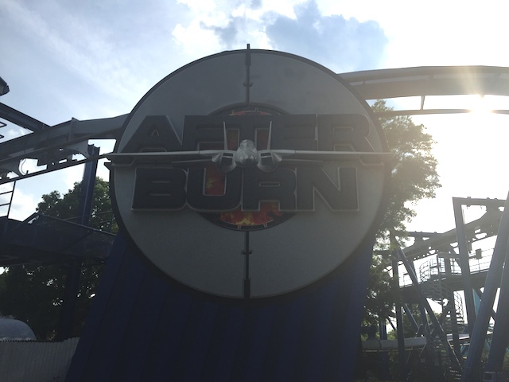
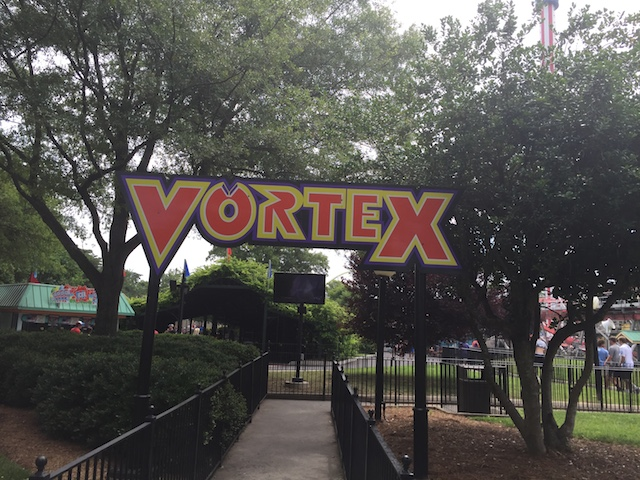
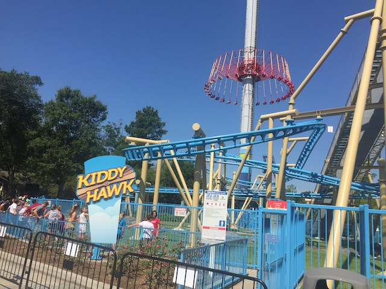

| |
Carowinds Review
Carowinds is a very nice and well run amusement park. It's a Cedar Fair park located right on the border of North Carolina and South Carolina. So yeah. This park is literally right on the border of two different states, so part of the park is in North Carolina, while the other half of the park is in South Carolina. Easy way to get two different state credits. And seriously, this is a really good park. There are a lot of really good coasters here. Not only do they have a really good B&M Hyper, a really good B&M Invert, and a fun Mack Launched Coaster, but they have one of the few B&M Giga coasters, and that is literally the best coaster I've been on from B&M, without a doubt. Seriously, go read the reviews I have for all those coasters, as well as all the other ones in the park. But on top of that, it has a lot of other really good stuff. I know they have a good flat ride collection, a couple cool rides, a good show, and a decent atmosphere, considering that it's all based on the Carolinas, and the fact that it really is just an overall fun park. It's definetly one of the better Cedar Fair parks. I know for a while, it wasn't one of the best. But all the recent additions over this past decade, with Fury 325 and Copperhead Strike have really put Carowinds on the map for most coaster enthusiasts. Definetly worth a visit if ever in the Charlotte area.
Rollercoasters
There is a link to a review of all the Rollercoasters at Carowinds.
Top Coasters
Fury 325 Review

Really Good Coasters
Afterburn Review

Copperhead Strike Review

Thunder Striker Review

Fun Coasters
Vortex Review

Meh Coasters
Carolina Cyclone Review

Flying Cobras Review

Family Coasters
Carolina Goldrusher Review

Ricochet Review

Mediocre Coasters
Hurler Review

Kiddy Coasters
Kiddy Hawk Review

Woodstock Express Review
Past Coasters
Nighthawk Review

Flat Rides
Here are the reviews of all the Flat Rides at Carowinds. Let's start out with their star flat ride is Electro Spin, which is the parks Top Scan. Sadly, I was not able to do this ride thanks to crowds. But these rides are always fun. Even Top Scans with lame programs are super fun. These rides are freaking amazing, and I am super happy that another one has made it to the U.S. Gotta ride that next time. But there are a couple of other fun flat rides. They have an enterprise, which normally, not a big deal. However, this is one of the very rare Schwarzkoph Enterprises, so this is a very rare. And on top of that, it's much stronger than the majority of enterprises. Yes, even better than the European ones with a really good program. They also have a Windseeker. Those are big, and they look really cool. But unless you are afraid of heights, then they're not scary. However, one more flat ride that we rode is worth really talking about. Mountain Gliders. Yes, these are flyers. And yes. They are in Planet Snoopy. Why the hell would these be worth mentioning? Simple. These things SNAP!!! These are some of the easiest flyers to snap. So of course, they are good with enthusiasts. Even I got a couple snaps, and I F*CKING SUCK at them. So others who actually are good, they can snap like crazy. And the operators actually encourage this! Seriously, it's just a ton of fun. They also have a troika, a breakspin, one of those Music Expresses, a falling star, a scrambler, TWO sets of chairswings (One of the old Yo-Yos, and a modern version), a breakspin, one of those evil looping starships (those are freaking TERRIBLE!), some bumper cars, and a classic carousel. I know they used to have an Intamin 2nd Generation Drop Tower. Yeah. It was small. But it was still fun. Lame that they got rid of it. Yeah. Carowinds is doing all right in the flat ride department.
Dark Rides
Now, Carowinds actually does have a couple dark rides. The main one is one I did is Boo Blasters. Nothing special about that ride. Just a typical Boo Blasters ride. But hey. Those are fun rides. Also, they have a cool 3D Show that's worth talking about. Yep, I'm talking about Z-Tech. Plants vs Zombies. And...yeah. A whole game where the premise is literally just...plants vs zombies. That's actually a really fun and creative idea. And it does lead to a really cool interactive 3D Show. I mean, you could be a scary zombie! Or you could be a plant! HA!!! NICE!!! But seriously. It's a really fun little interactive 3D Show. Totally worth checking out.
A standard, but still fun dark ride.
Water Rides
I never rode any of the water rides at Carowinds. But they do have one. A rapids ride called Rip Roaring Rapids. It seems like a fun rapids ride from looking at it. I'm sure it gets you fairly wet, and considering that it can get really hot in the Deep South, this is a good thing. Nothing extreme or out of the ordinary, but still looks like a lot of fun.
Water Park
And then there's their water park. Carolina Harbor. I never went to it, but from photos I've seen, and from looking at it, It looks like a fun little water park. Probably not gonna check it out anytime soon, but it still seems like a fun water park.
Hey. Trap Door Slides. Those are always fun in a water park.
Dining
I did not eat at Carowinds.
Theming and Other Attractions
Here are the reviews of all the other stuff at Carowinds. For theming, well...there is none. Ok, I guess there's a little bit of theming in the kids area. But come on. Planet Snoopy theming is not anything special. It's decent for a kids area, but it should be noted that Carowinds is an amusement park. Not a theme park. Though there is a little bit of atmosphere to the park, and a very big Carolina feel. I know the park really takes advantage of the fact that it's located on the border of North and South Carolina. So that's also part of the charm that this park has. As for other attractions, and stuff to do, there is one show worth talking about. Seasons of Cirque. So yeah. It's a Cirque du Soleil show. I know people tend to either love these types of shows or hate them. But regardless of your thoughts on the show, it's pretty good for Cirque du Soleil, and a show like that is not something you expect to see at a big amusement park, like Carowinds. I know they had a different Cirque du Soleil show on my first visit, but they really did a good job with this show, and I'd definetly recommend giving it a watch, or whatever other show they replace it with. Aside from that, there's just your typical generic stuff. Arcades, midway games, the usual stuff. But yeah. Carowinds is the place you go for roller coasters, not other stuff.
 I'm not the biggest Cirque du Solei fan, but this show was good.
I'm not the biggest Cirque du Solei fan, but this show was good.
In Conclusion
Carowinds is a very fun place to go. It's definetly one of the better Cedar Fair parks and up there as far as sheer amusement parks go. I know when it comes to coaster collections go, people think of places like Cedar Point, Six Flags Magic Mountain, and Six Flags Great Adventure as the parks with the biggest and best roller coaster collections. And while that may be true (ignoring all the parks with less coasters, but some of the best), Carowinds really is up there as far as sheer roller coaster collection goes. Not only does it have a lot of coasters, but Fury 325 is one of the best coasters in America, it has two other really good B&Ms that really bring up Carowinds, as Afterburn is really good, acting very similar to Montu, Intimidator, depending on how it's running, can be easily one of the better B&M Hyper Coasters, and Copperhead Strike is a really fun Mack Launched Coaster. But even aside from all the really good coasters, it has a really good flat ride collection, a couple good dark rides, and what looks like a really good waterpark, right next door to it. So yeah. If you're ever in Charlotte, you really need to check out Carowinds. It really is a good amusement park.
Enthusiast FAQs.
*Are there kiddy coaster restrictions? - No, No, and Yes. There are no restrictions for Kiddy Hawk or Woodstock Express. But you do need a child to ride Wilderness Run.

Tips
*Be sure to ride Fury 325 many many times.
*Thunder Striker can really vary on how it runs. Even in the exact same day. So if it's running weak early in the day, give it a second chance if time allows. It just might be running much better later in the day.
*Have Fun!!!!
Location
Charlotte, North Carolina, U.S.A
(Technically, the park is on the border of North and South Carolina, but it's registered as being in Charlotte)
Theme Park Category:
Amusement Park
Last Day Visited
July 25, 2019
Video
Complete Update List
2019
Mid-Atlantic Trip 2019
2016
Deep South Trip 2016
Here's a link to the parks website.
Home
|